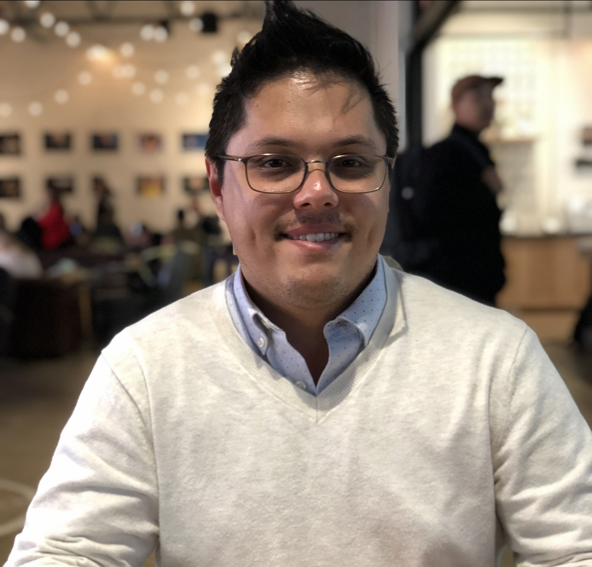

|  |
|
I am a pursuing a Bachelor of Science from California State University, San Marcos (CSUSM). Before I began my preparation as a full-time college student, I worked as a certified pharmacy technician in both inpatient and retail pharmacy settings. I still maintain employment for Costco Wholesale as a pharmacy technician while I complete my education.
My education path was uncertain until I started working for Tri-City Medical Center as a pharmacy technician. While I work with a possibility of pursuing a degree in pharmacy, I had exposure to the work of informatics. Seeing the intersection of healthcare and technology gave me better understanding of the direction I ultimately chose to pursue. Having influence from a family member who works for UCSF also helped shape my desire to pursue a degree in Computer Science and Information Technology.
I obtained my Associate of Arts degree from MiraCosta College then transferred to CSUSM. Many schools offer a degree in Computer Science, but CSUSM offered an option of Computer Information Systems. This degree proves to be very flexibile to go within different areas of the technology space. The core cirriculum is built on the fundamentals of Computer Science such as Data Structures, Algorithms, Networking, and Operating Systems; However, the degree branches away from theoretical work to incorporate business fundamentals in accounting, finance, oeprations management, and marketing.
I feel prepared to enter into the workforce once I graduate, but my future plans include further learning from UC San Diego Extended Studies. Certificate programs are offered in Java and Python development. While I am interested in a certificate program in a specific language while gaining industry experience, I am still considering the possibility of pursuing a graduate school degree in a more advanced field of Computer Science.
An online ordering system for an on-campus coffee cart. Technologies used will be an HTML structure, CSS for styling, JavaScript for action-related tasks, and PHP to connect the frontend of the website to the database on the backend.
The website has a main webpage with navigation buttons on the top to travel between About Us, Menu, and Login/Register pages. The website allows users to register accounts to the database for future development with a loyalty program. Three tables are currently implemented: Customers, Orders, Reviews. The Customers table is the common relationship between the Orders and Reviews table.
Team-developed Python app used to help users troubleshoot common network problems. An included feature is running a traceroute as well as checking a connection to a particular website.
Lead a team of classmates to research various applications for GPUs in applications outside of gaming. My contribution inculded research about the Folding@Home project inplemented by Vijay Pande at Stanford University.
The purpose is to use the GPU of end-users to help simulate protein folding and other computational biology modeling. The work would require a lot of cost and resources, but dividing the work to volunteer users helps in that cost while allowing the general public contribute to scientific research. The program allows end-users to download "work units" packets from Folding servers, complete the workloads with background GPU processing power, then upload the results for researchers.
Group project that analyzed the automotive giant and their progress towards electrification. This alayzed political factors, economical, and technological factors that could contribute with Ford's decision-making framework.